The Universe is governed by the laws of physics, and one of the most fundamental forces that shapes the cosmos is gravity. From the orbits of planets around their parent stars to the stunning spirals of galaxies, gravity is an invisible force that dictates the movement of celestial bodies. Understanding the intricacies of this force is a pursuit that has captivated scientists and astronomers for centuries, leading to the development of various theories and models. One of the most intriguing and computationally challenging approaches to simulate gravity's effects on multiple interacting objects is the n-body gravity simulation. In this article, we will delve into the world of n-body gravity simulations, by building a 2 dimensional gravity simulation ourselves.
The topics that have been discussed in this article can be implemented in code by any capable programmer in their favourite language. However, the specific implementation that was used in this article uses the following tech:
Firstly, we have to create a development environment using nodejs so that we can use typescript. Since the steps for setting up differ in Windows, Linux or OS X, I recommend using this guide to set up your development environment.
In our simulation, we will use Vectors to represent the physical properties of the particles. So, lets begin by defining a Vector 2 class
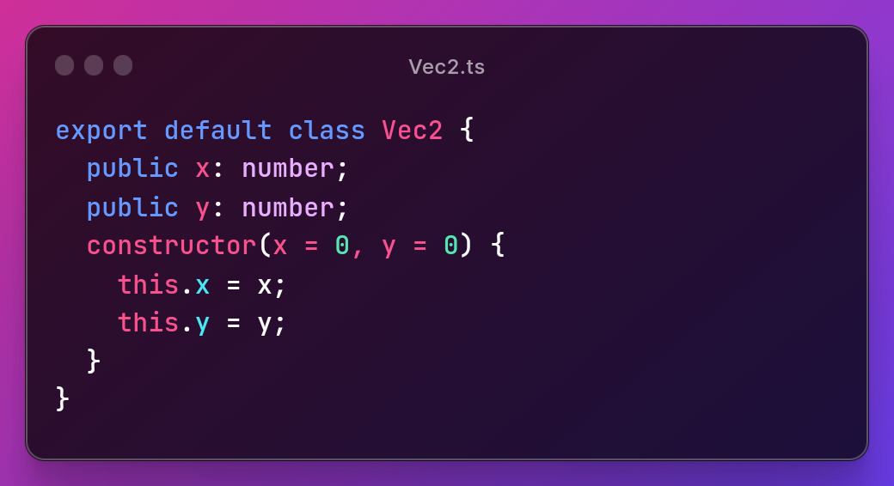While we are at it, let's also add a few methods to our Vector 2 class that will be used later in our simulation.
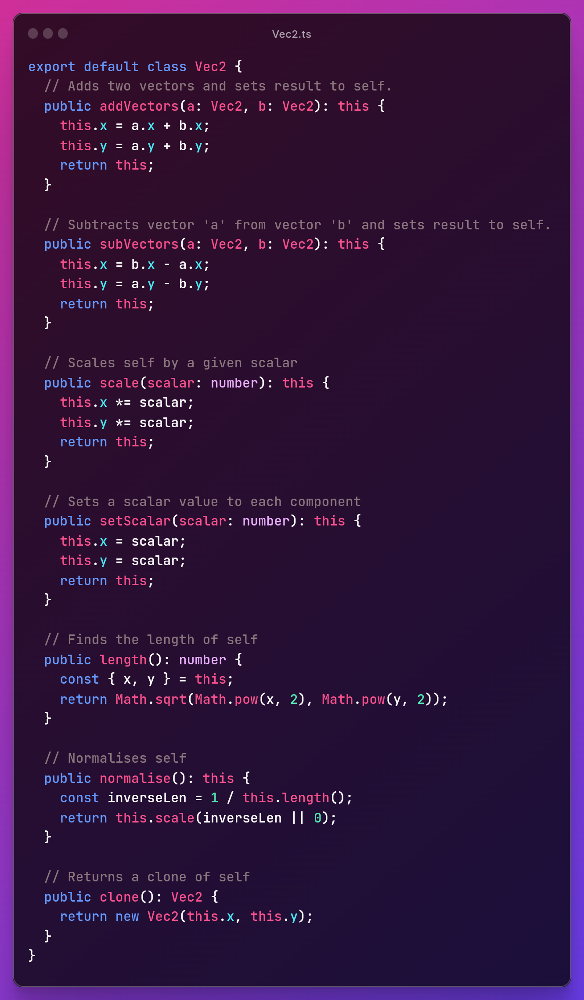Out of all the methods, the most interesting implementation might be of the normalise method. Instead of directly dividing the components of the vector by it's length, the method instead multiplies or scales the components of the vector by its inversed length which is essentially the same thing, but this way, the method run is a little more performant as computers perform multiplication operations faster than division operations. And this becomes noticable when the simulation is scaled.
In our simulation, we will use particles that will be affected by each other's gravity. Let's define a particle.
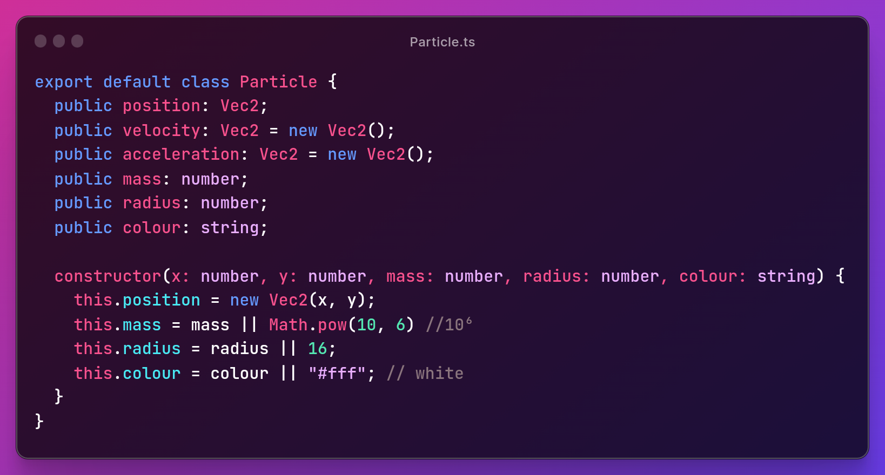We have also defined a few default values that our particles will use in case they're not defined when a particle class is instantiated.
Now that we have our vector and particle classes, we can start building our Physics Stepper that calculates the gravitational force and updates the positions of our particles. But first, we have to understand the formula for gravity. Which is defined as
F = (G × m1 × m2)/r2
Where G is the Gravitational Constant, m1 and m2 are the respective masses of two particles, and r is the distance between the two particles. The Gravitational Constant approximately equals to
G = 6.6743 × 10-11m3kg-1s-2
But before we start use this formula, we need to compute the distance between the two particles. For which, we can use the distance formula, that is
r = √((x2 - x1)2 + ((y2 - y1)2)
But, there is a better way which uses the length of the direction from p1 to p2. If you look at it, we are essentially performing the same calculations as we would if we were to use the distance formula but this is much simpler. We would computer the direction (d) and distance (r) as
d' = p1 - p2
r = |d'|
d = d' / |d'|
Now that we have the distance, we can apply the Gravity formula to obtain the Gravitational Force (F) experienced by P1. Then, we can compute acceleration (a) by restructuring the formula for Force (F) which is F = m × a as
a = F / m
Finally, we can multiply acceleration a(t + 1) with direction (d) and add the result to velocity v(t) to get the new velocity as:
v(t + 1) = v(t) + a(t + 1) × d
Then we can compute the new position using:x(t + 1) = x(t) + v(t + 1) × Δt
Let's implement this in code after we defining a few constants namely the Gravitational Constant (G), average particle mass (avg_mass), the deviation for average particle mass (mass_deviation), a radius for our particles and a fixed timestep that we will later compute ourselves. Most of these values will be used later when we create our particles.
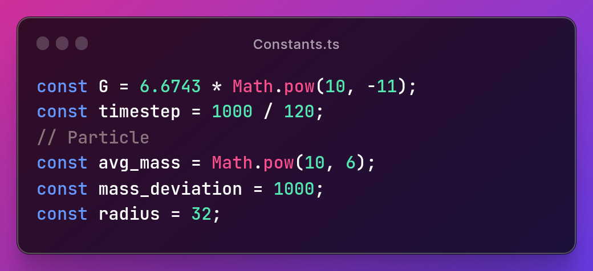And here is the implementation of the above explained math:
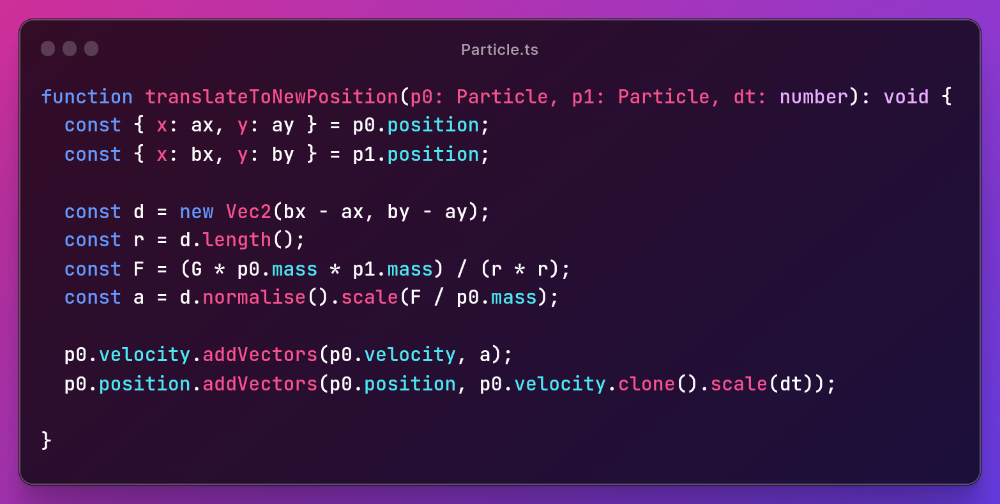Before we continue, let's see what happens to the other values if we change the mass of p1, while the mass of the other particle p2 stays constant at 108kg.
| Distance | Mass | Force | Acceleration |
|---|---|---|---|
| 10 | 104 | 0.66743 | vec2(-0.000066743, 0.000066743) |
| 10 | 105 | 6.6743 | vec2(-0.000066743, 0.000066743) |
| 10 | 106 | 66.743 | vec2(-0.000066743, 0.000066743) |
| 10 | 127 | 2391.522361344 | vec2(-0.000066743, 0.000066743) |
| 10 | 148 | 98498.5889646 | vec2(-0.000066743, 0.000066743) | Table 1: Real data obtained from simulation. |
In the above table, we see that even though the force F keeps on increasing, it doesn't affect the acceleration. So, we have accidentally proved that objects experience the same acceleration due to gravity regardless of mass. This is because the force is divided by mass when we calculate acceleration. So that cancels out the effect mass has on Force. Let's conduct another experiment where we exponentially increase the length between two particles without changing any other parameters and see how that affects the Gravitational Force.
| Mass | Position | Distance | Force |
|---|---|---|---|
| 1010 | vec2(100, 50) | 102 | 667430 |
| 1010 | vec2(1000, 500) | 103 | 6674.3 |
| 1010 | vec2(10000, 5000) | 104 | 66.743 |
| 1010 | vec2(100000, 50000) | 105 | 0.66743 |
| 1010 | vec2(1000000, 500000) | 106 | 0.0066743 | Table 2: Real data obtained from simulation. |
We can also use this function to find out the acceleration due to gravity on earth (g), by using real measurements of the earth.
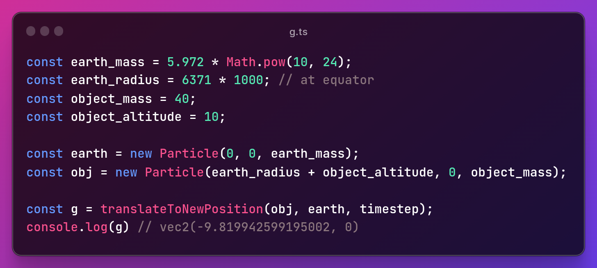Since the result we obtained is very close to the real value of g, We can say that our implementation is correct. We now have only two things left to do, render our particles to the screen, and create an update loop. Let's write some code to spread the particles on the screen using the constants we defined earlier and two new constants which we will use to make the spread area circular, we will also colour our particles using hsl, and then use the Canvas2DAPI to render them to the screen.
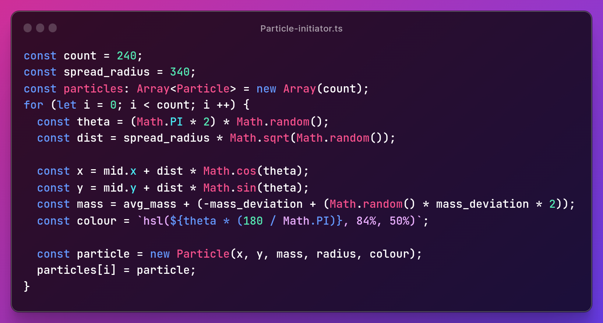For rendering, we need to add a canvas element with a id "canvas" to our html, then we can reference that canvas using typescript. We can use css for resizing the canvas. (The html and css code have not been shown)
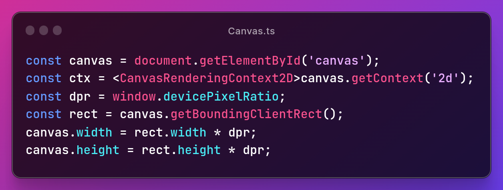The above code only gets a canvas from the DOM, resizes it and initiates a Canvas2DRenderingContext. For actually drawing the particles to the screen, we need to define a function called `render` in my implementation and then call the render method on each particle.
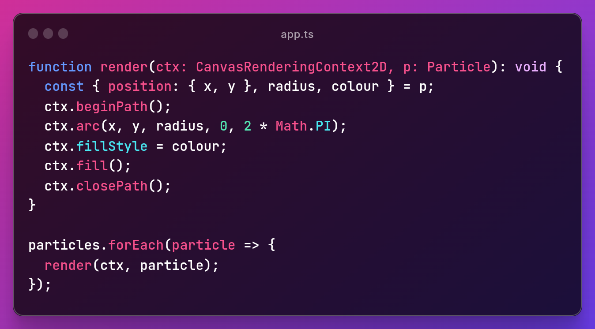Finally, we have got the particles rendering on our screen, the colours appear in a nice Gradient because we set the hue of the colour based on theta.
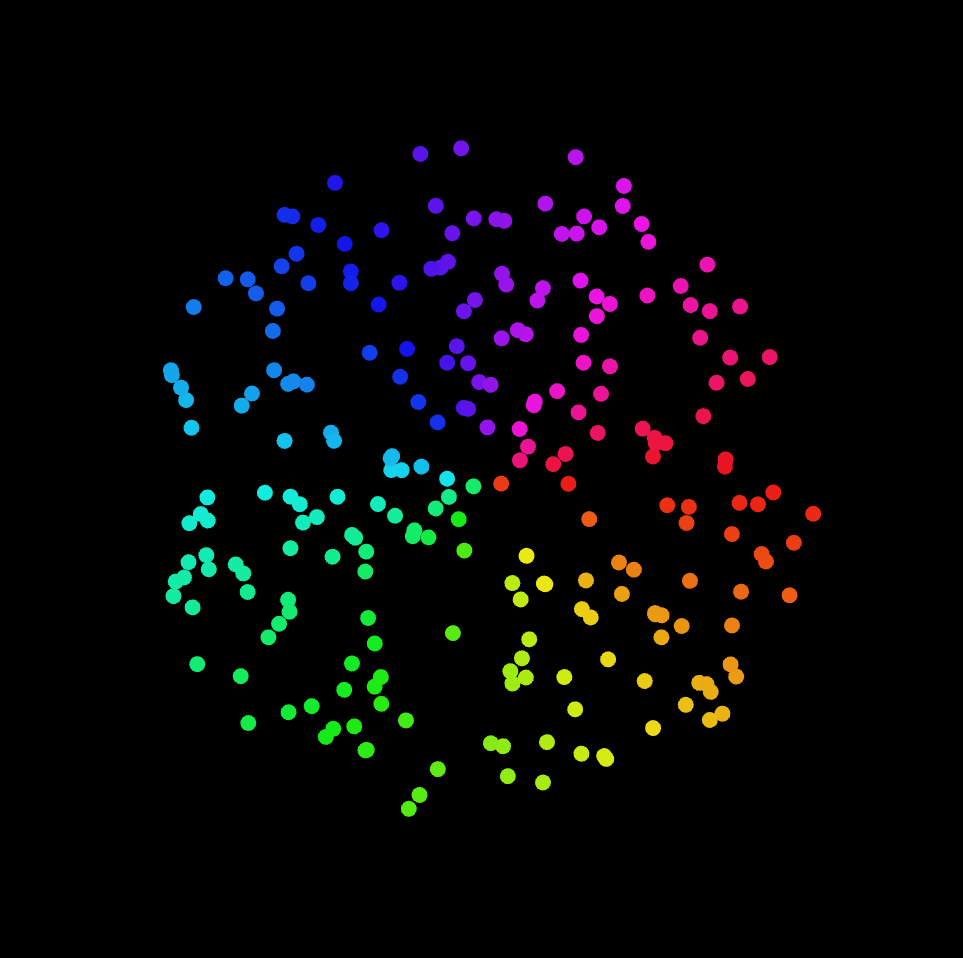At last, we can write our loop function that computes deltatime dt, updates the position of our particles and renders them to the screen after clearing it.
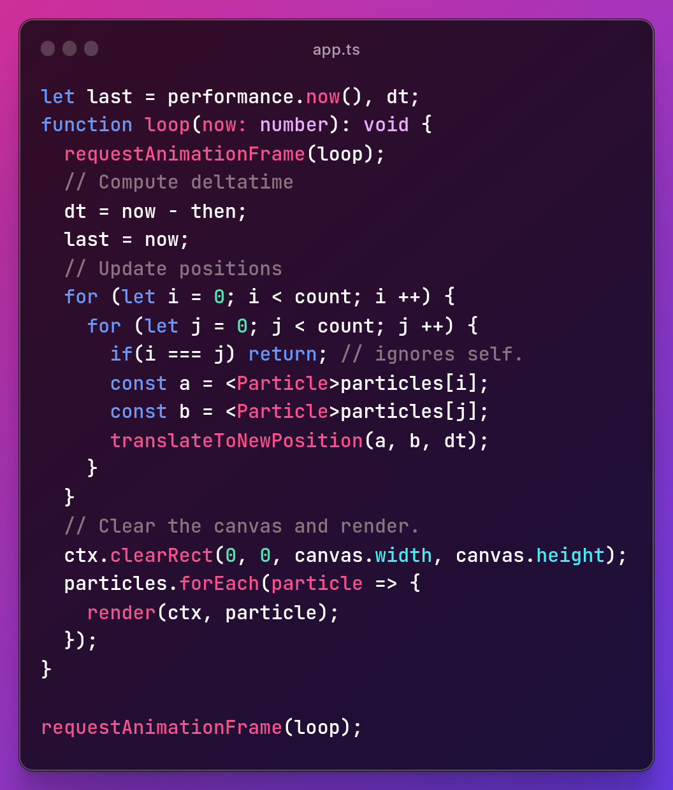And with that, we have a working n-body Gravity Simulation.
While our algorithm is very accurate, it is also very inefficient. It has a Time Complexity of O(n2) because we used a naive implementation. However, there are ways to improve the performance of this simulation by a lot. A few solutions to improve the efficiency of this algorithm and speed up rendering have been discussed below